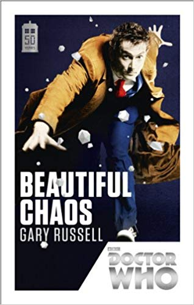

Eu sei, você veio aqui para pegar alguns arquivos. Só que antes de sair imprimindo tudo, olhe pela sua casa, nas suas próprias estantes, armários ou pilhas pelos cantos da casa (todo mundo tem alguma, não tem? Eu definitivamente tenho). Se você vir alguma dessas capas pode economizar a tinta da sua impressora, ela vai funcionar perfeitamente. Caso não tenha nenhuma, não se preocupe, essa página existe para isso! Clique na imagem que você quiser para fazer download individual dela, ou no botão mágico para eu mandar imprimir todas elas pra você sem te dar trabalho.
Você pode imprimir as imagens do tamanho que quiser desde que elas continuem visíveis, mas a impressão precisa estar sem falhas para a realidade aumentada funcionar direito, ok? Nada de qualidade rascunho, tô de olho em você!
Você quer me ouvir tagarelando e lendo o primeiro paragrafo de alguns livros? Ou talvez ouvir uma abertura de Doctor Who? Tente esses arquivos por sua conta e risco.


Nada aqui ainda por enquanto, isso ainda tá em construção. Se quiser pega uma fotinho de cachorro pra ficar feliz e volta depois.